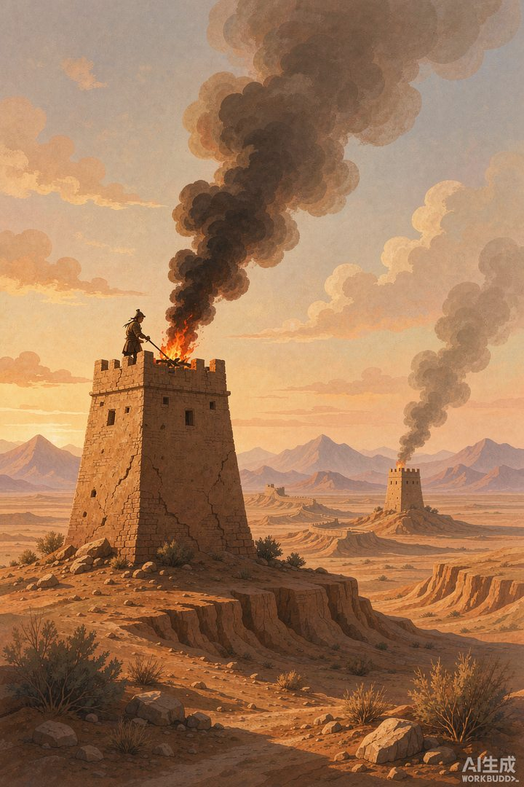
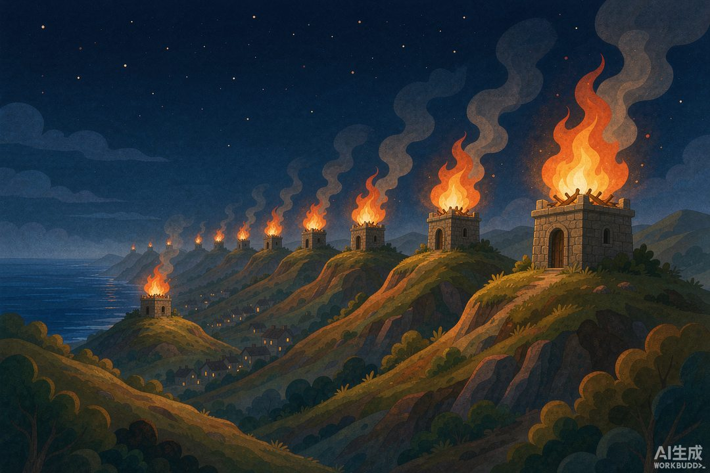

|
信息传播那些事儿 · 卷一 信息的黎明 · 第 13 篇 |
|
狼烟与灯塔：人类最早的"广播" —— 一条烟柱升起，千万人同时抬头 |

▲ 戈壁滩上的汉代烽燧燃起狼烟，下一座烽燧已经望见（AI 生成示意图）
|
上回说到，带消息的人就是消息本身，跑腿的信使随时可能把命搭进去。于是古人琢磨出一件狠事：能不能不让人跑？能不能让火光替你跑？这一篇，看人类最早的"广播系统"——烽火台，以及地中海边上那座不睡觉的巨塔。 |
信使这份工作有多险，上一篇已经写透了：消息越重要，送信的人越危险。周代人想出的第一个对策，是把散装信使收编成官办网络——修"周道"，设邮驿，驿站隔一段路养一班人马，公文一站一站接力往下传。国家出手，信使总算有了编制。
可驿站再密，马再快，本质上还是"人跑"。一匹好马昼夜狂奔，也就几百里。有没有更快的？古人抬头看了看天，笑了：马要跑路，光不用。从烽火台顶升起的这股烟，是人类历史上第一次让信息跑赢交通工具。
一 | 史上最早的《操作手册》 |
很多人以为烽火就是"点个火，大家看到就知道出事了"。太天真了。真这么随便点火，边关一年到头都在"狼来了"。烽火其实是一套精密的信号系统，而且——这是最颠覆认知的地方——汉朝人给它写了操作手册，还刻在木简上埋进了地里，两千年后被我们挖了出来。
1974 年，甘肃居延地区破城子出土了一份《塞上烽火品约》：写在 17 枚木简上，全文 610 多个字，是居延都尉下辖甲渠、卅井、殄北三个防区的联防条例。它规定得有多细？敌人在哪个方向来、来了多少人、什么时间、什么意图，对应点燃哪几种信号、各点几个，全部写得明明白白，连点错了怎么纠正都有条款。
汉代烽火的信号道具分五类：烽（草编或木框蒙布的笼子，白天挂在高杆上）、表（布帛旗帜）、烟（烟灶升起的烟柱）、苣火（苇束扎的火把）、积薪（巨大的柴草垛）。前三样白天用，苣火管晚上，积薪昼夜通用——白天看烟浓不浓，夜里看火大不大，物理原理安排得明明白白。
信号组合就是"敌情等级"。比如按《品约》：匈奴人十人以上在塞外，白天举二蓬、夜里烧二苣火、点一积薪；要是千人以上来攻亭障，规格直接拉满——昼三蓬、夜三苣火、燔三积薪。不同的"火型组合"，就是不同的警报级别，相当于今天安保系统的蓝色、黄色、橙色、红色预警。如果你觉得这像一组状态码——没错，这就是公元前的 HTTP 状态码，只不过用烟和火发送。
▲ 烽燧上的戍卒按《品约》举蓬、燃烟——白天看烟，夜里看火（AI 生成示意图）
二 | 光的速度：一昼夜六百多公里 |
这套系统到底有多快？居延汉简里留着实测记录：烽火传递速度大约每汉时 100 汉里。汉时约合今天的 1.5 小时，一昼夜算下来，烽火能跑 1600 汉里——折算成今天的里程，大约 580 到 660 公里（因汉里折算口径不同而略有出入）。别忘了，这可是两千年前，没有电，没有发动机，全程靠烧柴。
换个更直观的算法：边疆重镇敦煌如果发现敌情，烽火传到首都长安，三昼两夜，约 60 小时，跑完两千多里。而同一时刻，最快的驿马还在半道上狂奔。汉代人有诗为证——"候骑至甘泉，烽火通长安"：侦察骑兵刚到甘泉，烽火已经先一步照亮了长安的夜空。消息跑赢了马，这在人类信息史上是头一回。
烽燧的布点也是系统工程：汉代边塞大约五里一燧、十里一墩、三十里一堡、百里一城寨，烽火台沿着长城连成一条"信号总线"，相邻两台必须互相望得见。前一座点火，后一座看见了必须立即"和如品"——照着《品约》转发同样的信号，一个接一个接力下去。这不就是网络里的"转发"吗？每一座烽燧，都是一台路由器。
它甚至有"心跳包"。唐代实行"平安火"制度：每天清晨和夜里，各烽燧按时举一次平安火，表示"今天没事"。如果哪座烽燧的平安火没来，后方立刻知道——要么出事了，要么天气作妖。说到天气，这套系统也有降级方案：遇上大风大雨，烽火点不着，《品约》明确规定要"人走马驰以疾"，马上切换回人力信道，连夜把警报文书接力送出去。主信道光通信，备用信道跑腿，故障自动切换——两千年前的系统设计，已经想到了容灾。
三 | 灯塔：定点广播的极端形态 |
烽火是"组网广播"——一台点火，全线路可见，图的是快。而地中海那边，古人把火光玩出了另一种极端：不追快，追亮、追稳、追一千年不熄。这就是灯塔。
约公元前 280 年，埃及托勒密二世在亚历山大港外的法罗斯岛上，建成了后来位列"世界七大奇迹"的法罗斯灯塔。它有多高？阿拉伯文献的记载出奇一致：103 到 118 米（另一说 135 米），在当时全世界只有吉萨金字塔比它高。三层结构——下层方形、中层八角、顶层圆柱，花了 12 年、耗资 800 塔兰特白银建成。
它的"广播技术"相当讲究：顶层日夜烧着炉火，火前立着一块巨大的抛光青铜镜。白天反射日光，夜里放大火光，据记载光柱可以照到几十公里外的海面。一座塔，服务了亚历山大港将近 1500 年，直到 1303 年和 1323 年的连环大地震把它摇塌。1480 年，后人干脆用它的残存石料在原址盖了一座城堡——今天你去亚历山大港，还能看到那座卡特贝城堡站在灯塔的骨头上。
把烽燧和灯塔摆在一起看特别有意思：烽燧是广播电台，一次点火，全线路接收，传的是"警报"；灯塔是机场塔台，一座塔对一港口，传的是"导航"。一个求覆盖，一个求精准。火还是那团火，用法一变，就是两种完全不同的信息业务。

▲ 1588 年英格兰海岸，烽火台沿着山脊一个接一个烧起来（AI 生成示意图）
四 | 1588：烽火链的巅峰一役 |
别以为烽火只是老古董。1588 年夏天，它打出了历史上最著名的一场"实况直播"。
7 月 19 日，西班牙"无敌舰队"——130 艘战舰、3 万人马——出现在英格兰西南角的利泽德半岛海面上。英格兰人等这一天等了好几年，早就把一条烽火链修遍了南岸到内陆的山头。舰队刚一露头，烽火台逐山点燃，警报几个小时内就烧过了大半个英格兰，直抵伦敦。女王伊丽莎白一世和她的枢密院，几乎与前线"同步"得知了敌情。西班牙人不知道的是，他们的"偷袭"，在点火的那一刻就已经全网直播。
之后的故事写进了所有英国史：英格兰百余艘快船靠着更远的火炮射程一路缠斗，8 月 7 日深夜用 8 艘火船夜袭加莱锚地，把西班牙新月阵烧散；格拉沃利讷一战定音。溃退的无敌舰队绕行苏格兰、爱尔兰，又被风暴反复收割——出发时 130 艘，回到西班牙的只剩约 67 艘，两万人上下葬身大海与荒滩；而英格兰方面战死不足百人。
胜利的原因当然很多：船型、火炮、天气、运气。但有一条常被忽略——英格兰的烽火网让整个国家的动员速度，跑赢了舰队的航行速度。入侵者还在海上颠簸，防守方已经完成了全国集结。信息传递的速度差，在 1588 年这个夏天，直接兑换成了国运。
不过，烽火有个天生的短板，古人心里门儿清：它能喊"狼来了"，却喊不了"狼来了以后买什么米"。烟柱只能传预设的警报码，一句话的细节都装不下。要让成千上万份公文、政令、账本日复一日地跑起来，光靠烧柴是不够的——还得靠国家修路、设站、养马。在欧亚大陆的另一头，波斯人已经把这套"地面信息高速公路"修到了变态的程度。下一站，去看国王的命令怎么在七天内跑完两千七百公里。
|
数字锚点 · 狼烟与灯塔 | |||||||||||||||
| |||||||||||||||
|
🔔 下篇预告 · 第 14 篇《波斯御道》——烽火只能喊"狼来了"，装不下一份公文。波斯帝国怎么修出人类第一条"信息高速公路"？驿站隔三十里一个，国王的命令七天跑完两千七百公里，希腊人听了直呼神迹。 |
史料转引：居延汉简《塞上烽火品约》（1974 年破城子出土）及汉代烽燧制度研究；《汉书·晁错传》等边塞记载；斯特拉波《地理学》、老普林尼《自然史》等关于法罗斯灯塔的古典记载；1588 年英西海战通行战史。配图为 AI 生成示意图。